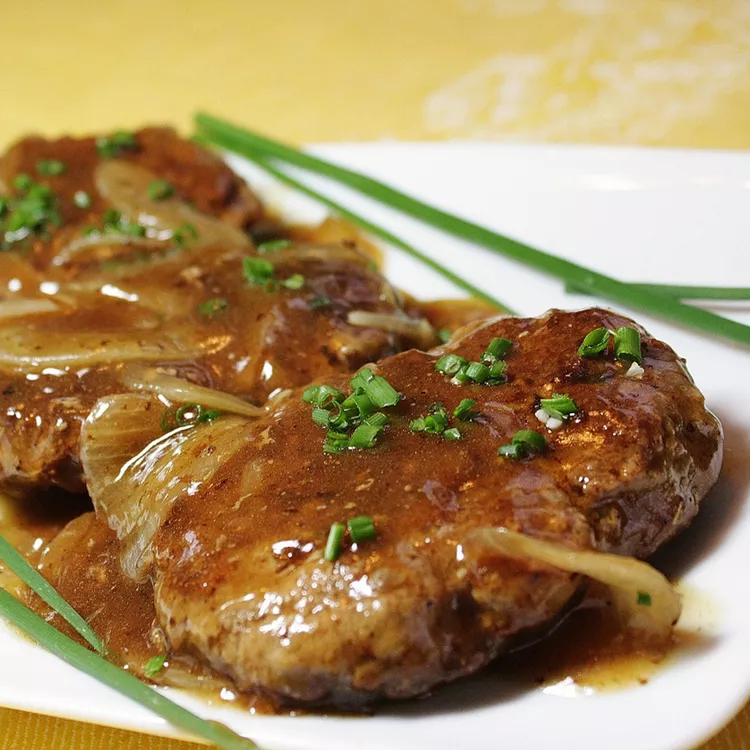
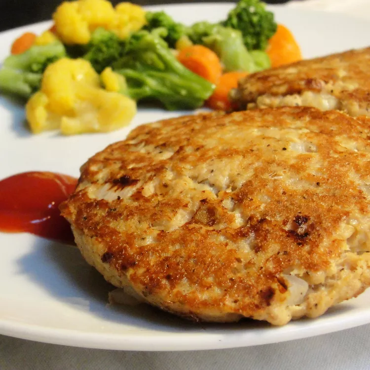

World's Best Lasagna
This lasagna recipe takes a little work, but it is so satisfying and filling that it's worth it!

Hamburger Steak
Tasty hamburger "steaks" smothered in gravy and onions. Serve with hot rice or potatoes for an easy-to-make dinner classic. It's a great way to dress up a pound of ground beef and you probably have all the ingredients on hand!

Grandma's Famous Salmon Cakes
Wondering how to make salmon cakes? This is a recipe for my grandmother's famous salmon cakes. It's a family recipe that has been passed down through generations. Serve them with macaroni and cheese or any other type of side dish.